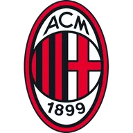
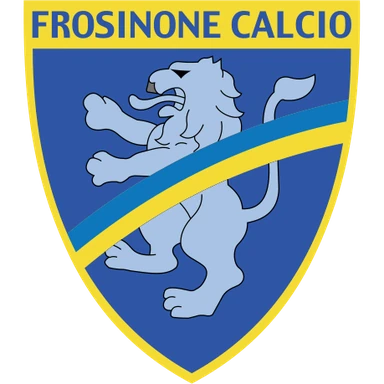

Миландома, 4-е место
Фрозинонев гостях, 6-е местоМилан — Фрозиноне прогноз на матч 22 ноября
Расчёт модели
- 1,9 : 1,4ожидаемые голы
- 49 %тотал больше 3,5
- 66 %обе забьют
Кэфы на матч
- П11,54
- Х4,73
- П25,74
Тотал 3,5: больше 1,94, меньше 1,95
Это справка, не рекомендация.
Цифры считает модель по данным сайта, а не эксперт. Это вероятности, а не гарантия исхода. Как считает модель · словарь терминов.
- ТурнирСерия А
Коротко о матче
По форме команды близки: в пяти последних матчах у обеих по 3 победы. Слабое место — оборона: Милан — в среднем 1,6 пропущенного мяча за игру в этих пяти матчах, так что у соперника будут моменты.
Стоит учесть и площадку: дома Милан — 4 победы в 7 матчах, на выезде Фрозиноне — 1 победа в 5.
По расчёту модели фаворит — Милан: 68 % на победу. Это оценка по данным, а не обещание исхода.
Форма: последние матчи
Милан 3 победы из 5
- В2:0
 П2:4
П2:4- В3:1
- П0:2
 В2:1
В2:1
Фрозиноне 3 победы из 5
 В4:2
В4:2- Н4:4
- В5:1
 В2:0
В2:0 П0:1
П0:1
Положение в таблице
| Команда | Место | И | В | Н | П | Голы | Очки |
|---|---|---|---|---|---|---|---|
| Милан | 4 | 11 | 7 | 3 | 1 | 23:13 | 24 |
| Фрозиноне | 6 | 11 | 6 | 2 | 3 | 24:15 | 20 |
Другие матчи Серии А в этот день
Куда дальше
Материалы носят информационный характер и не гарантируют результат. Реклама букмекеров на сайте не размещается. Сайт только для совершеннолетних (18+).